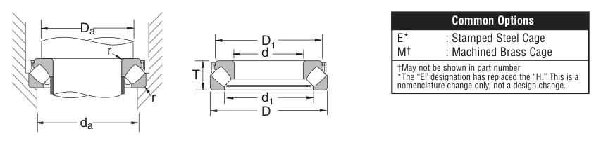

Original catalogue drawing - NSK catalogue, page 149

Scanned from the manufacturer catalogue page listing this part number. All part numbers printed on that table share the same drawing.
Scale cross-section
Blue = inner / outer ring, yellow = rolling element. Drawn to scale from this part's own
dimensions for selection reference only - not a manufacturing or assembly drawing.
Dimension table (mm / inch)
Symbol
Dimension
mm
inch
d
Bore diameter
190
7.4803
D
Outside diameter
320
12.5984
T
Overall assembly width
78
3.0709
C
Cup / outer-ring width
37.998
1.496
Notes
Thrust bearing ratings are axial values Ca / Coa; T is the overall height. Weights are given in kg. Load ratings are shown in both the original catalogue units and the converted value (1 N = 0.2248 lbf). Data is provided for selection reference only - confirm against the latest official catalogue before ordering.
Main dimensions
Bore d (mm)
190
Bore d (in)
7.4803
Outside dia. D (mm)
320
Outside dia. D (in)
12.5984
Overall width T (mm)
78
Overall width T (in)
3.0709
Cup width C (in)
1.496
Bore d1 (in)
11.358
Outside dia. D1 (in)
9.606
Load ratings & speeds
Basic dynamic axial rating Ca (lbs)
310000
Basic static axial rating Coa (lbs)
1060000
Limiting speed - oil (rpm)
1,000
Weight
Weight (kg)
22.906
Mounting dimensions (fillets / shoulders)
Chamfer r (in)
0.118
Shaft shoulder da min (in)
10.827
Housing shoulder Da (in)
9.843
Bearing life (ISO 281 basic rating life)
C / P
Equivalent load P (N)
L10 (106 rev)
L10h at 300 rpm
4
344,737
102
5,644
6
229,825
392
21,805
8
172,369
1,024
56,889
10
137,895
2,154
119,691
15
91,930
8,323
462,415
Basic rating life per ISO 281: L10 = (C/P)10/3 with C = 1,378,949 N. Hours = L10 x 106 / (60n). Life-modification factors for lubrication, contamination and temperature (aISO) are not included.
Source & traceability
Brand
NSK
Source catalogue
NSK inch product catalogue
Catalogue page
p.151 (dimensions) / p.152 (ratings)
Dimensions in inches and millimetres, load ratings in lbs.
Send us the quantity you need and we will come back with price and
lead time, normally within 24 hours. Equivalent parts from other brands can be quoted at the same time.